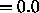
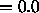
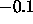
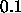

As a first step, a three--layer feedforward network must be constructed with full connectivity between input and hidden layer and between hidden and output layer. Either the graphical editor or the tool BIGNET (both built into SNNS) can be used for this purpose.
The output function of all neurons is set to Out_
Identity. The activation function of all hidden layer neurons is
set to one of the three special activation functions
Act_RBF_ (preferably to Act_RBF_Gaussian). For the
activation of the output units, a function is needed which takes the
bias into consideration. These functions are Act_Logistic and
Act_Identity Plus Bias.
(preferably to Act_RBF_Gaussian). For the
activation of the output units, a function is needed which takes the
bias into consideration. These functions are Act_Logistic and
Act_Identity Plus Bias.
The next step consists of the creation of teaching patterns. They can be generated manually using the graphical editor, or automatically from external data sets by using an appropriate conversion program. If the initialization procedure RBF_Weights_Kohonen is going to be used, the center vectors should be normalized to length 1, or to equal length.
It is necessary to select an appropriate bias for the hidden units before the initialization is continued. Therefore, the link weights between input and hidden layer are set first, using the procedure RBF_Weights_Kohonen so that the center vectors which are represented by the link weights form a subset of the available teaching patterns. The necessary initialization parameters are: learn cycles =0, learning rate

, shuffle
. Thereby teaching patterns are used as center vectors without modification.To set the bias, the activation of the hidden units is checked for different teaching patterns by using the button TEST of the SNNS control panel. When doing this, the bias of the hidden neurons have to be adjusted so that the activations of the hidden units are as diverse as possible. Using the Gaussian function as base function, all hidden units are uniformly highly activated, if the bias is chosen too small (the case bias =0 leads to an activation of 1 of all hidden neurons). If the bias is chosen too large, only the unit is activated whose link weights correspond to the current teaching pattern. A useful procedure to find the right bias is to first set the bias to 1, and then to change it uniformly depending on the behavior of the network. One must take care, however, that the bias does not become negative, since some implemented base functions require the bias to be positive. The optimal choice of the bias depends on the dimension of the input layer and the similarity among the teaching patterns.
After a suitable bias for the hidden units has been determined, the
initialization procedure RBF_Weights can be started. Depending
on the selected activation function for the output layer, the two
scale parameters have to be set (see
page  ). When Act_IdentityPlusBias
is used, the two values 0 and 1 should be chosen. For the logistic
activation function Act_Logistic the values -4 and 4 are
recommended (also see figure
). When Act_IdentityPlusBias
is used, the two values 0 and 1 should be chosen. For the logistic
activation function Act_Logistic the values -4 and 4 are
recommended (also see figure  ). The parameters
smoothness and deviation should be set to 0 first. The
bias is set to the previously determined value. Depending on the
number of teaching patterns and the number of hidden neurons, the
initialization procedure may take rather long to execute. Therefore,
some processing comments are printed on the terminal during
initialization.
). The parameters
smoothness and deviation should be set to 0 first. The
bias is set to the previously determined value. Depending on the
number of teaching patterns and the number of hidden neurons, the
initialization procedure may take rather long to execute. Therefore,
some processing comments are printed on the terminal during
initialization.
After the initialization has finished, the result may be checked by
using the button. However, the exact network error can
only be determined by the teaching function. Therefore, the learning
function RadialBasisLearning has to be selected first. All
learning parameters are set to 0 and the number of learning cycles
(CYCLES) is set to 1. After pressing the button , the
learning function is started. Since the learning parameters are set to
0, no changes inside the network will occur. After the
presentation of all available teaching patterns, the actual error is
printed to the terminal. As usual, the error is defined as the sum of
squared errors of all output units (see
formula  ). Under certain conditions it can be
possible that the error becomes very large. This is mostly due to
numerical problems. A poorly selected bias, for example, has shown to
be a difficult starting point for the initialization. Also, if the
number of teaching patterns is less than or equal to the number of hidden
units a problem arises. In this case the number of unknown
weights plus unknown bias values of output units exceeds the number of
teaching patterns, i.e. there are more unknown parameters to be
calculated than equations available. One or more neurons less inside
the hidden layer then reduces the error considerably.
). Under certain conditions it can be
possible that the error becomes very large. This is mostly due to
numerical problems. A poorly selected bias, for example, has shown to
be a difficult starting point for the initialization. Also, if the
number of teaching patterns is less than or equal to the number of hidden
units a problem arises. In this case the number of unknown
weights plus unknown bias values of output units exceeds the number of
teaching patterns, i.e. there are more unknown parameters to be
calculated than equations available. One or more neurons less inside
the hidden layer then reduces the error considerably.
After the first initialization it is recommended to save the current network to test the possibilities of the learning function. It has turned out that the learning function becomes quickly unstable if too large learning rates are used. It is recommended to first set only one of the three learning rates ( centers, bias (p), weights) to a value larger than 0 and to check the sensitivity of the learning function on this single learning rate. The use of the parameter bias (p) is exceptionally critical because it causes serious changes of the base function. If the bias of any hidden neuron is getting negative during learning, an appropriate message is printed to the terminal. In that case, a continuing meaningful training is impossible and the network should be reinitialized.
Immediately after initialization it is often useful to train only the link weights between hidden and output layer. Thereby the numerical inaccuracies which appeared during initialization are corrected. However, an optimized total result can only be achieved if also the center vectors are trained, since they might have been selected disadvantageously.
The initialization procedure used for direct link weight calculation is unable to calculate the weights between input and output layer. If such links are present, the following procedure is recommended: Even before setting the center vectors by using RBF_Weights_Kohonen, and before searching an appropriate bias, all weights should be set to random values between

and
by using the initialization procedure Randomize_Weights. Thereby, all links between input and output layer are preinitialized. Later on, after executing the procedure RBF_Weights, the error of the network will still be relatively large, because the above mentioned links have not been considered. Now it is easy to train these weights by only using the teaching parameter weights during learning.